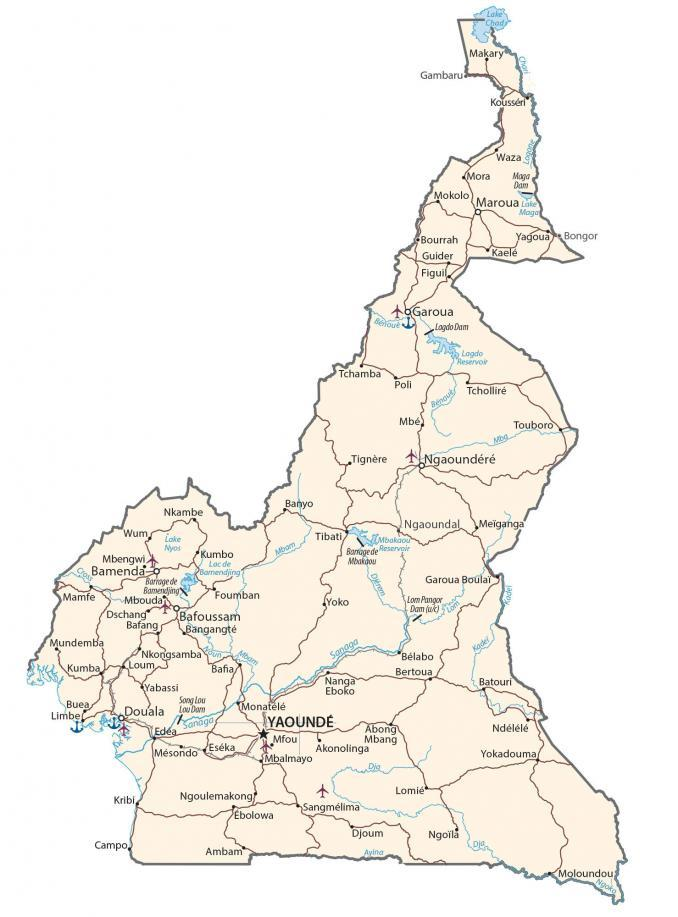

Cameroon has a very central geographic position in all of Africa. In fact, some consider Lobeke National Park in far southeastern Cameroon as the center of Africa. It’s also like a hinge because it’s at a deflection point in the Gulf of Guinea. It borders six other countries.
It borders Nigeria to the northwest, Chad to the northeast, the Central African Republic to the east, as well as Equatorial Guinea, Gabon, and the Republic of the Congo to the south. Yaoundé is the capital city, but Douala is the largest metropolitan area.
Go back home